무선설비기사 (2021-06-26 기출문제)
1과목: 디지털 전자회로
1. 다음 그림과 같이 2[kΩ]의 저항과 실리콘(Si)다이오드의 직렬 회로에서 다이오드 양단의 전압크기는 얼마인가?
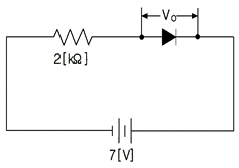
- 0[V]
- 1[V]
- 5[V]
- 7[V]
(정답률: 99%)

2. 다음 정류회로에 대한 설명으로 옳은 것은?
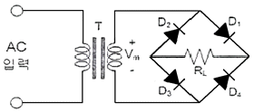
- 저전압 정류할 때 적합하다.
- Vs가 양의 전압일 때 RL양단에 전류가 흐르지 않는다.
- RL에 걸리는 역방향 전압의 최대치는 T의 2차 전압의 최대치에 가깝다
- 다이오드에 걸리는 역방향 전압의 최대치는 T의 2차 전압의 최대치에 2배에 가깝다.
(정답률: 100%)
3. 콘덴서를 이용한 필터의 출력에 리플전압이 발생하는 이유는?
- 콘덴서의 인덕턴스
- 콘덴서의 개방
- 콘텐서의 충전과 방전
- 콘덴서의 단락
(정답률: 94%)
4. 다음 중 전치 증폭기에 대한 설명으로 틀린 것은?
- 출력신호를 1차 증폭시킨다.
- 초기신호를 정형한다.
- 고출력 증폭용으로 사용된다.
- 일반적으로 종단 증폭기에 비해 증폭률이 낮다.
(정답률: 86%)
5. 다음 회로의 동작점(Q)으로 알맞은 것은? (단, β = 50, VBE = 0.7[V] )
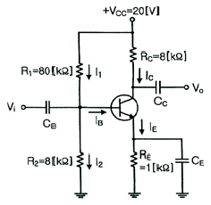
- 3.5[㎃], 18.5[V]
- 2.5[㎃], 17.5[V]
- 0.5[㎃], 15.5[V]
- 0.3[㎃], 10.5[V]
(정답률: 94%)
6. 다음 바이어스 회로에서 트랜지스터의 DC이득이 β=100 이고, VBE = 0.7[V]이다. VCC = 10[V]일 때 컬렉터에 흐르는 DC 전류 IC = 10[㎃] 가 되도록하는 바이어스 저항 RB는 얼마인가?(오류 신고가 접수된 문제입니다. 반드시 정답과 해설을 확인하시기 바랍니다.)
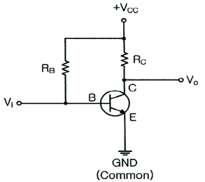
- 320[kΩ]
- 495[kΩ]
- 880[kΩ]
- 930[kΩ]
(정답률: 90%)
7. 다음 증폭기 회로에서 RE가 증가하면 어떤 현상이 일어나는가?
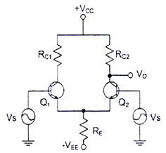
- 차동이득이 감소한다.
- 차동이득이 증가한다.
- 동상이득이 감소한다.
- 동상이득이 증가한다.
(정답률: 98%)
8. 다음 중 비반전 연산증폭기에 대한 설명으로 옳은 것은?
- 출력과 입력의 위상은 동위상이다.
- 두 개의 단자에 흐르는 전류는 최대값을 가진다.
- 입력단자의 전압은 0 이다.
- 폐루프 이득은 항상 1보다 작다.
(정답률: 97%)
9. 다음 회로에 대한 설명으로 옳은 것은?
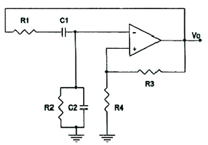
- 발진주파수의 가변이 쉽다.
- 고주파용 발진기이다.
- 발진주파수
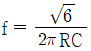
[Hz] 이다. - 폐루프 이득은 항상 1보다 작다.
(정답률: 88%)
10. 병렬저항형 이상형 발진회로에서 1.6[㎑]의 주파수를 발진하는데 필요한 저항 값은 약 얼마인가? (단, C=0.01[㎌])
- 2[kΩ]
- 4[kΩ]
- 6[kΩ]
- 8[kΩ]
(정답률: 92%)
11. 다음 중 주파수변조(FM)에서 신호대 잡음비(S/N)을 개선하기 위한 방법이 아닌 것은?
- 디엠파시스(De-Emphasis) 회로를 사용한다.
- 주파수대역폭을 넓게 한다.
- 변조지수를 크게 한다.
- 증폭도를 크게 높인다.
(정답률: 93%)
12. 다음 중 PWM의 특징과 거리가 먼 것은?
- PAM보다 S/N비가 크다
- PPM보다 전력부하의 변동이 크다.
- LPF를 이용하여 간단히 복조할 수 있다.
- 진폭 제한기를 사용하여도 페이딩을 제거할 수는 없다.
(정답률: 98%)
13. 9,600[bps]의 비트열을 16진 PSK로 변조하여 전송하면 변조속도는?
- 1,200[Baud]
- 2,400[Baud]
- 3,200[Baud]
- 4,600[Baud]
(정답률: 97%)
14. 다음 중 주파수변조를 진폭변조와 비교한 설명으로 틀린 것은?
- 페이딩의 영향이 적다.
- 주파수의 혼신방해가 적다.
- 사용주파수대역이 좁다.
- S/N비가 개선된다.
(정답률: 100%)
15. 다음 중 출력 파형으로 구형파를 얻을 수 없는 회로는?
- 멀티바이브레이터
- 슈미트트리거 회로
- 부트스트랩 회로
- 슬라이서 회로
(정답률: 91%)
16. 슈미트 트리거 회로에 대한 설명 중 틀린 것은?
- 입력이 어느 레벨이 되면 비약하여 방형 파형을 발생시킨다.
- 입력 전압의 크기가 on, off 상태를 결정한다.
- 펄스 파형을 만드는 회로로 사용한다.
- 증폭기에 궤한을 걸어 입력신호의 진폭에 따른 1개의 안정 상태를 갖는 회로이다.
(정답률: 93%)
17. 다음 그림과 같은 회로의 출력은?
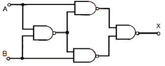
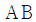
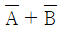
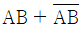
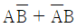
(정답률: 90%)
18. 25진 리플 카운터를 설계할 경우 최소한 몇 개의 플립플롭이 필요한가?
- 3개
- 4개
- 5개
- 6개
(정답률: 100%)
19. 반감산기에서 차를 얻기 위하여 사용되는 게이트는?
- 배타적OR게이트
- AND게이트
- NOR게이트
- OR게이트
(정답률: 96%)
20. 다음 그림의 회로 명칭은 무엇인가?
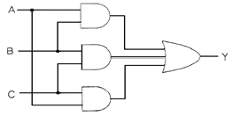
- 일치 회로
- 반 일치 회로
- 다수결 회로
- 비교 회로
(정답률: 100%)
2과목: 무선통신 기기
21. 다음 중 VSB 변조의 특징에 대한 설명으로 틀린 것은?
- 양 측파대 중 원하지 않는 측파대를 완전히 제거하지 않고 그 일부를 잔류시켜 원하는 측파대와 함께 전송한다.
- VSB 변조는 SSB 변조에 비해 25-33[%] 정도의 대역폭을 넓게 사용하지만 간단히 만들 수 있다.
- 원하지 않은 측파대를 완벽히 제거하지 않아야 하므로 필터 설계조건이 까다롭다.
- DSB 변조와 SSB 변조를 절충한 방식으로 텔레비전 방송에 사용되고 있다.
(정답률: 93%)
22. FM 수신기에서 이득이 15[dB], 잡음지수가 1.4[dB]인 증폭기 후단에 이득이 10[dB], 잡음지수가 1.6[dB]인 또 다른 증폭기가 있다. 이 수신기의 종합잠음 지수는?
- 1.34[dB]
- 1.44[dB]
- 1.54[dB]
- 1.64[dB]
(정답률: 93%)
23. 다음 중 PLL(Phase-Locked Loop)방식의 응용분야와 이에 대한 설명으로 틀린 것은?
- TV수상기에서 수평주사와 수직주사를 동시에 맞추기 위해 사용된다.
- FM스테레오 튜너의 성능을 개선하기 위함이다.
- 인공위성으로부터의 신호를 추적하는 데 사용된다.
- FM수신기의 이득을 높이기 위함이다.
(정답률: 88%)
24. 다음 중 초단파대 이하의 무선송신기에서 종단전력증폭기를 안테나와 결합시킬 경우 주로 π형 결합회로가 사용되는 이유가 아닌 것은?
- 반사파가 제거된다.
- 정합회로 설계가 용이하다.
- 스퓨리어스 발사 억제에 효과적이다.
- 멀티밴드(Multi Band) 조정이 용이하다.
(정답률: 85%)
25. 64 QAM의 심볼속도가 19,200[심볼/초]이다. 데이터 전송속도는 얼마인가?
- 115.2[kbps]
- 153.6[kbps]
- 307.2[kbps]
- 1.2[Mbps]
(정답률: 97%)
26. 다음 중 디지털 변조 방법은?
- PAM
- PCM
- PPM
- PWM
(정답률: 97%)
27. 이진변조에서 M-진 변조로 확장할 대 다음 중 주파수 효율이 가장 낮은 변조방식은?
- M진ASK
- M진FSK
- M진PSK
- M진QAM
(정답률: 97%)
28. 다음 중 정보에 따라 주파수를 변환시키는 디지털 변조 방식은?
- ASK
- FSK
- PSK
- QAM
(정답률: 100%)
29. 다음 중 QPSK(Quadrature Phase Shift Keying) 대신 OQPSK(Offset QPSK)방식을 사용하는 이유로 적합한 것은?
- 전송률을 높이기 위해서이다.
- 같은 전송률로 BER(Bit Error Rate)을 낮추기 위해서이다.
- 180[°] 위상변화를 제거하기 위해서이다.
- 수신기 복잡도를 줄이기 위해서이다.
(정답률: 96%)
30. 다음 중 레이다의 기능에 의한 오차에 속하지 않는 것은?
- 해면반사
- 거리오차
- 방위오차
- 선박 경사에 의한 오차
(정답률: 96%)
31. 다음 중 GNSS_Global Navigation Satellite System)의 위성항법시스템이 아닌 것은?
- GPS
- GLONASS
- LORAN-C
- Galileo
(정답률: 95%)
32. 다음 중 용어가 바르게 연결되지 않은 것은?
- DSC : 디지털 선택 호출
- NBDP : 협대역 직접 인쇄 전신
- EPIRB : 비상위치지시용 무선표지설비
- VOR : 계기착륙시설
(정답률: 96%)
33. 다음 중 항해 장비를 운용할 때 고려사항이 아닌 것은?
- 항해지침에 따른 지정지점의 통제기관과의 교신을 포함한다.
- 주변교통량에 따른 지정지점의 통제기관과의 교신을 포함한다.
- 주변여건을 고려하여 선박의 적정한 자세 및 고도 확인을 포함한다.
- 항해장비는 수면비행선박 조종을 위한 보조적 장치이므로 맹목적으로 신뢰하여야 한다.
(정답률: 98%)
34. 다음 중 DC-DC 컨버터의 구성요소가 아닌 것은?
- 구형파 발생기
- 정류회로
- 정전압회로
- 버퍼회로
(정답률: 93%)
35. 무부하시의 직류 출력전압을 220[V], 부하시의 직류 출력 전압을 200[V]라 할 때, 전압 변동률은 몇[%]인가?
- 5[%]
- 10[%]
- 20[%]
- 40[%]
(정답률: 100%)
36. 다음 중 진폭변조(AM) 송신기의 전력 측정방법으로 적합하지 않은 것은?
- 실효 저항법
- 의사 공중선법
- 전구의 조도비교법
- 볼로메터 브리지법
(정답률: 100%)
37. 다음 중 필터의 Shape Factor를 바르게 나타낸 것은? (단, B3는 3[dB]대역폭, B6는 6[dB]대역폭, B60은 60[dB]대역폭이다.)
- B6 / B3
- B60 / B3
- B3 / B6
- B60 / B6
(정답률: 97%)
38. 수신기의 안정도는 수신기를 구성하는 어떤 구성요소의 주파수 안정도에 의해 결정되는가?
- 동조회로
- 고주파 증폭기
- 국부 발진기
- 검파기
(정답률: 99%)
39. 다음 중 필터법을 이용한 송신기의 왜율 측정에 필요하지 않는 것은?
- LPF(Low Pass Filter)
- BPF(Band Pass Filter)
- HPF(High Pass Filter)
- 감쇠기
(정답률: 97%)
40. 어떤 동축 케이블의 종단 개방시 입력 임피던스가 30[Ω]이고 종단 단락 시 입력 임피던스가 187.5[Ω]일 때 이 동축 케이블의 특성 임피던스는 몇 [Ω]인가?
- 50[Ω]
- 65[Ω]
- 75[Ω]
- 80[Ω]
(정답률: 96%)
3과목: 안테나 공학
41. 자유공간에서, 전파가 20[㎲] 동안 전파 되었을 때 진행한 거리는 어느 정도인가?
- 2㎞
- 6㎞
- 20㎞
- 60㎞
(정답률: 97%)
42. 다음 중 포인팅 벡터의 단위는?
- J/m2
- W/m2
- J/m3
- W/m3
(정답률: 98%)
43. 다음 중 양청구역에 대한 설명으로 틀린 것은?
- 전리층 반사파와 지표파간의 간섭이 약한 지역으로 통신품질이 양호한 지역이다.
- 전리층 반사파 전계가 지표파의 전계강도보다 강한 지역이다.
- 송신 안테나에서부터 전리층 반사파와 지표파의 전계강도가 같아지는 지점까지의 영역이다.
- 수신점의 잡음온도, 송신전력, 대지의 전기적 특성에 따라 달라진다.
(정답률: 96%)
44. 다음 중 지표파의 대지에 대한 영향으로 틀린 것은?
- 지표파의 전계강도 감쇠가 커지는 순서는 “해상→해안→평야→구릉→산악→시가지”이다.
- 주파수가 낮을수록 멀리 전파된다.
- 대지의 비유전율이 클수록 멀리 전파된다.
- 수평편파보다 수직편파 쪽이 감쇠가 작다.
(정답률: 95%)
45. 다음 중 전리층의 주간 및 야간의 변화에 대한 설명으로 틀린 것은?
- D층은 야간에 장파대의 전파를 반사시킬 수 있다.
- E층은 주간에 약 10[MHz]의 단파를 반사시킬 수 있다.
- F층은 단파대의 전파를 반사시킬 수 있다.
- Es층은 80[MHz] 정도의 초단파를 반사시킬 수 있다.
(정답률: 100%)
46. 페이딩을 방지하기 위해 둘 이상의 수신 안테나를 서로 다른 장소에 설치하여 두 수신 안테나의 출력을 합성하거나 양호한 출력을 선택하여 수신하는 방법이 사용되는 페이딩은?
- 간섭성 페이딩
- 편파성 페이딩
- 흡수성 페이딩
- 선택성 페이딩
(정답률: 99%)
47. 다음 중 지표파에서 가장 손실이 적어 원거리까지 도달할 수 있는 경우는?
- 수직편파를 사용하여 해상을 전파할 때
- 수평편파를 사용하여 해상을 전파할 때
- 수직편파를 사용하여 평야를 전파할 때
- 수평편파를 사용하여 평야를 전파할 때
(정답률: 100%)
48. 비동조 급전선의 특징이 아닌 것은?
- 급전선상에 진행파만 존재하도록 한다.
- 장거리 전송에도 손실이 적고 전송 효율이 높다.
- 송신기와 안테나의 거리가 멀 때 사용한다.
- 정합장치가 필요 없다.
(정답률: 95%)
49. 그림과 같이 600[MHz]의 반파장 안테나의 끝에서 전압 급전을 하고자 한다. 급전선(I)의 최소 길이는?
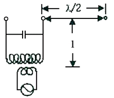
- 0.25m
- 2.5m
- 25m
- 250m
(정답률: 97%)
50. 다음 중 동조 급전선에 대한 설명으로 틀린 것은?
- 급전선상에 정재파가 존재한다.
- 급전선의 길이가 길 때 사용한다.
- 임피던스 정합장치가 불필요하다.
- 전송효율이 비동조 급전선보다 낮다.
(정답률: 95%)
51. 다음 중 스미스 차트(Smith Chart)를 사용하여 구할 수 없는 것은?
- 실효전력
- 반사계수
- 전압정재파비
- 정규화 임피던스
(정답률: 96%)
52. 다음 중 도파관에 대한 설명으로 틀린 것은?
- 도파관내의 전파속도에는 위상속도와 군속도가 있다.
- 고역통과 필터의 일종이다.
- 도파관에 전송할 수 있는 파장은 모드에 따라 다르다.
- 주파수가 높을수록 저항손실과 유전체 손실이 커진다.
(정답률: 100%)
53. 접지안테나 복사저항이 36.6[Ω]이고, 접지저항이 7[Ω]이며, 그 외의 손실저항이 4[Ω]이다. 안테나 효율은?
- 75.4[%]
- 76.8[%]
- 78.6[%]
- 79.2[%]
(정답률: 94%)
54. 반파장 안테나에 10[A] 전류가 흐를 때 500[km] 지점에서 최대 복사 방향에서의 전계강도는 약 얼마인가?
- 10[mV/m]
- 4.3[mV/m]
- 2.1[mV/m]
- 1.2[mV/m]
(정답률: 90%)
55. 전자파 적합성(EMC)을 고려한 기기설계에는 두 가지 접근 방법이 있다. 하나는 응급(Crisi) 접근법이고 다른 하나는 시스템(System) 접근법이다. 다음 중 시스템 접근법에 해당되는 것만 고르시오.
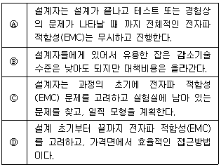
- Ⓐ, Ⓑ
- Ⓑ, Ⓒ
- Ⓒ, Ⓓ
- Ⓐ, Ⓓ
(정답률: 97%)
56. 다음 중 전자파내성(EMS)에 대한 특징으로 가장 적합한 것은?
- 전자파장해 또는 전자파간섭이라고 하며 전자기기로부터 부수적으로 발생되는 불필요한 전자파가 공간으로 방사된다.
- 전원선을 통해 전도되어 해당기기 자체나 통신망 및 다른 전기·전자기기에 전자기적 장해를 유발시킨다.
- 전자파를 발생시키는 기기가 다른 기기의 성능에 영향을 주지않도록 전자파가 방사 또는 전도되는 것을 제한한다.
- 전자파보호, 전자파내성 또는 전자파 민감성이라 하며 전자파방해가 존재하는 환경에서 기기, 장치 또는 시스템이 성능의 저하 없이 동작할 수 있다.
(정답률: 98%)
57. 다음 중 전파환경에 대한 설명으로 적합하지 않은 것은?
- 전자파 적합성에는 전자파필터와 전자파내성 등이 있다.
- 전자파 인체보호에는 전자파강도와 전자파흡수율이 있다.
- 전자파 환경은 크게 전자파 적합성과 전자파 인체보호기준으로 나눌 수 있다.
- 인체, 기자재, 무선설비 등을 둘러싸고 있는 전파의 세기, 잡음 등 전자파의 총체적인 분포 상황을 말한다.
(정답률: 97%)
58. 장해전자파를 발생시키는 기기가 건물 내에 설치되어 있는 경우 아래와 같은 조건에서 장해전자파의 허용치(EL)는 얼마인가? (조건 : 기기로부터 거리 d 위치에서의 장해전자파 크기(Ed) = 250[dBμV/m], 건물의 감쇠량(L) = 30[dB])
- 230 [dBμV/m]
- 280 [dBμV/m]
- 310 [dBμV/m]
- 330 [dBμV/m]
(정답률: 93%)
59. 다음 중 가장 광대역 특성을 갖는 안테나는?
- 롬빅(Rhombic) 안테나
- 동축 다이폴 안테나
- 1파장 루프 안테나
- 제펠린(Zeppeline) 안테나
(정답률: 90%)
60. 다음 중 텔레비전 방송의 송신용으로 적당하지 않은 안테나는?
- 슈퍼턴 스타일(Super Turn stile) 안테나
- 쌍루프 안테나
- 슈퍼게인(Super Gain) 안테나
- U라인 안테나
(정답률: 97%)
4과목: 무선통신 시스템
61. 다음 중 무선 송신기의 발진부의 발진기 조건에 해당되지 않는 것은?
- 고조파 발생이 적어야 한다.
- 전원 전압의 변화에 따라 발진 출력이 비례하여 변하여야 한다.
- 주파수의 미조정이 용이 해야한다.
- 주파수 안정도가 높아야 한다.
(정답률: 95%)
62. 다음 중 디지털 통신시스템을 설계하는 경우 고려해야 할 사항이 아닌 것은?
- 최소의 전송전력
- 최소의 심볼에러
- 최대의 채널 대역폭
- 최대의 데이터 전송율
(정답률: 89%)
63. 다른 주파수에서 다수의 반송파 신호를 사용하여 각 채널상에 비트를 실어 보내는 방식은?
- 위상분할 다중화
- 시분할 다중화
- 파장분할 다중화
- 직교주파수 분할 다중화
(정답률: 100%)
64. 다음 중 의사잡음(PN 부호)에 관한 설명으로 틀린 것은?
- 일정한 주기로 반복된다.
- 주파수 대역폭을 확산시키는데 사용된다.
- 주파수 합성기로 만든다.
- 재밍(Jamming)을 최소화 할 수 있다.
(정답률: 79%)
65. 다음 중 WCDMA의 물리계층(PHY) 기능이 아닌 것은?
- 패킷 재전송
- 채널 코딩
- 변조
- 데이터 다중화
(정답률: 92%)
66. 재난안전통신망에서 제공되어야 할 핵심 요구기능으로 가장 거리가 먼 것은?
- 생존·신뢰성
- 신속·홍보성
- 재난대응과 보안성
- 운용효율과 상호운용성
(정답률: 98%)
67. 통합공공통신망(PS-LTE, LTE-M, LTE-R)에서 사용하는 무선 주파수 대역은 다음 중 어느 것인가?
- 500[MHz]
- 600[MHz]
- 700[MHz]
- 800[MHz]
(정답률: 87%)
68. UHD TV 지상파 채널로 2개 이상의 방송신호를 서로 다른 계층으로 나눠 전송하여 한 채널에 HD방송과 UHD방송을 서비스할 수 있는 기술은?
- LDM
- MMT
- SFN
- ROUTE
(정답률: 90%)
69. 다음 중 무선 LAN 단말기 상호간 전송 중에 발생하는 충돌을 방지하기 위해 사용하는 방식은?
- TDM
- CSMA/CA
- CDM
- FDM
(정답률: 98%)
70. 다음 중 각종 물품에 소형 Chip을 부착해 사물의 정보와 주변 황경정보를 무선주파수로 전송·처리하는 비접촉 인식 시스템은 무엇인가?
- DMB
- RFID
- CDMA
- BCN
(정답률: 100%)
71. 다음 중 무선 AP(Access Point)에서 공인 IP와 사설 IP를 상호 변환하는 기술은?
- NAT(Network Address Translation)
- DHCP(Dynamic Host Configuration Protocol)
- Teaming
- Virtualization
(정답률: 99%)
72. 무선 근거리 통신망을 나타내는 용어는?
- AAA
- WLAN
- WWAN
- WMAN
(정답률: 99%)
73. 다음 중 ISM 대역을 포함하고 있지 않는 주파수 대역은?
- 700MHz 대역
- 2.4GHz 대역
- 5GHz 대역
- 60GHz 대역
(정답률: 99%)
74. 다음 CSMA/CD 기술과 CSMA/CA 기술에 대한 설명 중 맞지 않는 것은?
- CSMA/CD는 IEEE802.3의 MAC에 적용된 기법이다.
- CSMA/CA는 IEEE802.11의 MAC에 적용된 기법이다.
- CSMA/CD와 CSMA/CA 모두 송신 전에 매체를 확인한다.
- CSMA/CD에서는 명시적인 ACK 패킷을 이용해 충돌회피를 시도한다.
(정답률: 95%)
75. 다음 규격 중 OSI 참조모델의 네트워크 계층과 관계가 가장 적은 것은?
- IP
- MTP
- X .21
- Q.931
(정답률: 96%)
76. 무선통신시스템 설계 시 단파가 중장파보다 불리한 점은 어느 것인가?
- 복사 능률이 더 낮다.
- 페이딩의 영향이 더 크다.
- 안테나 설치가 어렵다.
- 원거리 통신에 불리하다.
(정답률: 83%)
77. 다음 중 무선통신시스템에서 보안에 위협이 되는 요소의 종류가 아는 것은?
- 피상적 공격(Superficial Attack)
- 수동적 공격(Passive Attack)
- 능동적 공격(Active Attack)
- 비인가 사용(Unauthorized Usage)
(정답률: 94%)
78. 다음 중 장애처리 매뉴얼을 작성할 때 적합하지 않은 것은?
- 시스템 관련 예비품 관리기준
- 장애 발생을 확인하는 일련의 절차와 방법
- 환경의 영향 및 개인보호 장비와 관련 기준
- 통신망 성능을 최적화하기 위한 전송 경로 제어방법
(정답률: 93%)
79. 스펙트럼분석기를 이용하여 측정할 수 있는 주요 측정 항목으로 틀린 것은?
- Channel Power
- S Parameter
- 점유주파수 Bandwidth
- Spurious
(정답률: 91%)
80. RF 네트워크 분석기를 이용하여 측정할 수 있는 주요 측정 항목으로 틀린 것은?
- Time Delay
- Retrun Loss
- VSWR
- Spurious Emission
(정답률: 94%)
5과목: 전자계산기 일반 및 무선설비기준
81. 다음 중 누산기(Accumulator)에 대한 설명으로 옳은 것은?[17년1회]
- 연산장치에 있는 레지스터의 하나로서 연산 결과를 기억하는 장치이다.
- 기억장치 주변에 있는 회로인데 가감승제 계산 논리 연산을 행하는 장치이다.
- 일정한 입력 숫자들을 더하여 그 누계를 항상 보존하는 장치이다.
- 정밀 계산을 위해 특별히 만들어 두어 유효 숫자 개수를 늘리기 위한 것이다.
(정답률: 98%)
82. 다음은 어떤 장치에 대한 설명인가?
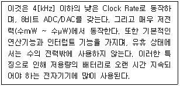
- Micro Processor
- Micro Controller
- Digital Signal Processor
- Multi mode Processor
(정답률: 94%)
83. 다음 중 스위치와 허브에 대한 설명으로 올바른 것은?
- 전통적인 케이블 방식의 CSMA/CD는 허브라는 장비로 대체되었다.
- 임의의 호스트에서 전송한 프레임은 허브에서 수신하며, 허브는 목적지로 지정된 호스트에만 해당 데이터를 전달한다.
- 허브는 외형적으로 스타형 구조를 갖기 때문에 내부의 동작 역시 스타형 구조로 작동되므로 충돌이 발생하지 않는다.
- 스위치 허브의 성능 문제를 개선하여 허브로 발전하였다.
(정답률: 94%)
84. 다음 중 100Base-TX의 이더넷 규격에서 이용하는 케이블로 올바른 것은?
- Category3이상의 UTP 케이블
- Category5이상의 UTP 케이블
- 동축케이블
- 광케이블
(정답률: 95%)
85. IP주소와 서브넷 마스크를 참조할 때 다음 중 가능한 네트워크 주소는?
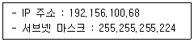
- 192.156.100.0
- 192.156.100.64
- 192.156.100.128
- 192.156.100.255
(정답률: 97%)
86. 다음 중 무선랜의 보안 문제점에 대한 대응책으로 적절하지 않은 것은?
- AP보호를 위해 전파가 건물 내부로 한정되도록 전파 출력을 조정하고 창이나 외부에 접한 벽이 아닌 건물 안쪽 중심부, 특히 눈에 띄지 않는 곳에 설치한다.
- SSID(Service Set Identifer)와 WEP(Wired Equipment Privacy)를 설정한다.
- AP의 접속 MAC주소를 필터링한다.
- AP의 DHCP를 가능하도록 설정한다.
(정답률: 91%)
87. 데이터베이스(DB) 사용자의 기대를 만족시키기 위해 지속적으로 수행하는 데이터 관리 및 개선활동에 해당하는 용어는?
- 데이터 정제
- 데이터 백업
- 데이터 측정
- 데이터 품질 관리
(정답률: 100%)
88. 이진수 10010011과 10100001을 논리합(OR)으로 맞게 변환한 값은?
- 00110010
- 10110011
- 10000001
- 10000100
(정답률: 97%)
89. 다음 중 네트워크 가상화의 종류에 해당하지 않는 것은?
- 호스트 가상화
- 링크 가상화
- 스토리지 가상화
- 라우터 가상화
(정답률: 91%)
90. 분산 컴퓨팅에 관한 설명으로 틀린 것은?
- 분산컴퓨팅의 목적은 성능확대와 가용성에 있다.
- 성능확대를 위해서는 컴퓨터 클러스티의 활용으로 수직적 성능확대와 수평적 성능확대가 있다.
- 수평적 성능확대는 통신연결을 높은 대역의 통신 회선으로 업그레이드하여 성능 향상 시키는 것이다.
- 수직적 성능확대는 컴퓨터 자체의 성능을 업그레이드 하는 것을 말한다. CPU, 기억장치 등의 증설로 성능향상을 시킨다.
(정답률: 89%)
91. “전파의 전파특성을 이용하여 위치·속도 및 기타 사물의 특징에 관한 정보를 취득하는 것”으로 정의되는 것은?
- 전파측정
- 전파측위
- 무선측위
- 무선측정
(정답률: 93%)
92. 다음 문장의 괄호 안에 들어갈 적합한 말은?
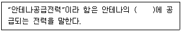
- 접지선
- 급전선
- 송신장치
- 단말기
(정답률: 100%)
93. 과학기술정보통신부장관이 주파수 분배를 할 때 고려사항이 아닌 것은?
- 국가안보·질서유지 또는 인명안전의 필요성
- 주파수의 이용현황 등 국내의 주파수 이용여건
- 전파를 이용하는 서비스에 대한 수요
- 유선통신기술의 발전추세
(정답률: 99%)
94. 다음 중 필요주파수대폭 202(MHz)를 바르게 표시한 것은?
- M202
- 2M02
- 202M
- 20M2
(정답률: 99%)
95. 3[MHz]부터 30[MHz]까지 주파수대역 중 방송용으로 분배된 주파수의 전파를 이용하여 음성·음향 등을 보내는 방송은?
- 데이터방송
- 중파방송
- 단파방송
- 초단파방송
(정답률: 88%)
96. 전파발사의 등급을 표시함에 있어 “다섯째 기호 : 다중화특성” 중 “부호분할 다중”(대역폭 확장기술 포함)을 표시하는 기호는 어느 것인가?
- C
- F
- W
- T
(정답률: 89%)
97. 다음 문장의 괄호 안에 들어갈 내용으로 가장 적합한 것은?
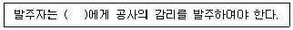
- 공사업자
- 용역업자
- 도급업자
- 수급인
(정답률: 83%)
98. 다음 문장의 괄호 안에 들어갈 내용으로 가장 적합한 것은?
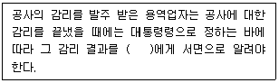
- 도급자
- 발주자
- 수급인
- 하도급자
(정답률: 100%)
99. 전파법령에 따라 검사를 받은 전파응용설비 정기검사의 유효기간은 얼마인가?
- 1년
- 3년
- 5년
- 7년
(정답률: 90%)
100. 적합성평가 시험업무를 하는 시험기관의 지정은 누가하는가?
- 산업통상부장관
- 한국정보통신기술협회장
- 한국방송통신전파진흥원장
- 과학기술정보통신부장관
(정답률: 99%)